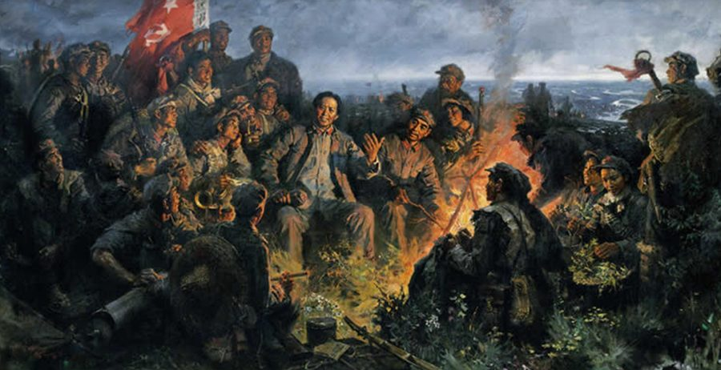
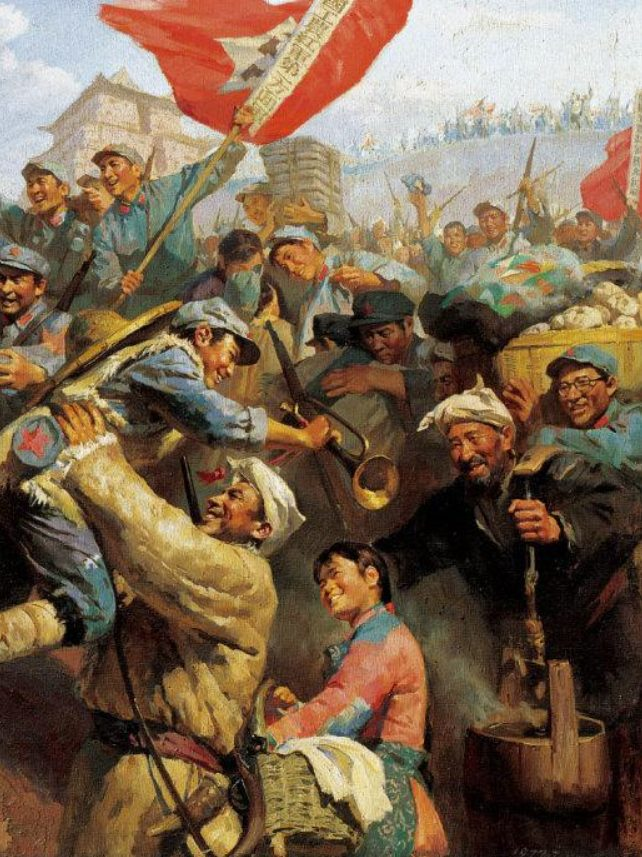
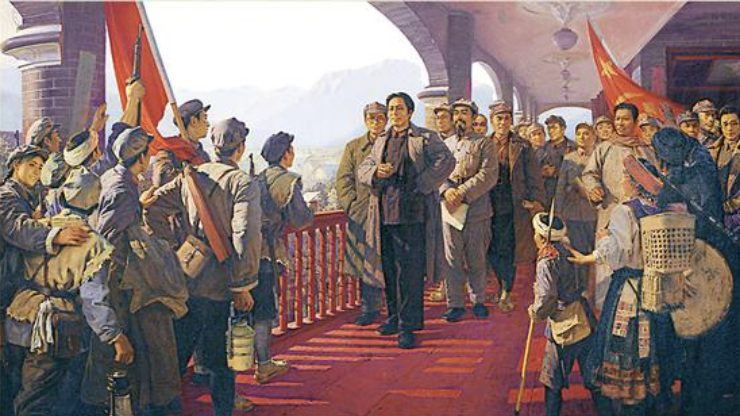
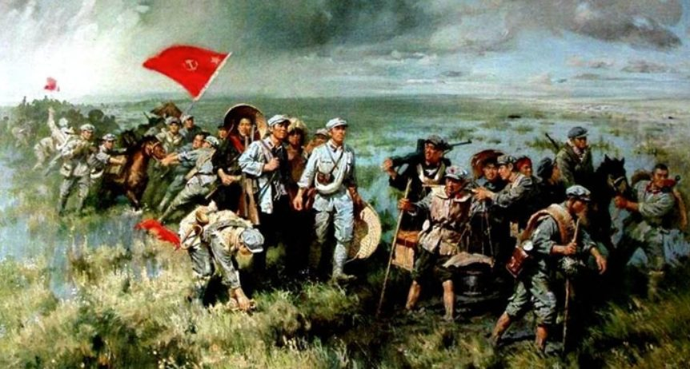
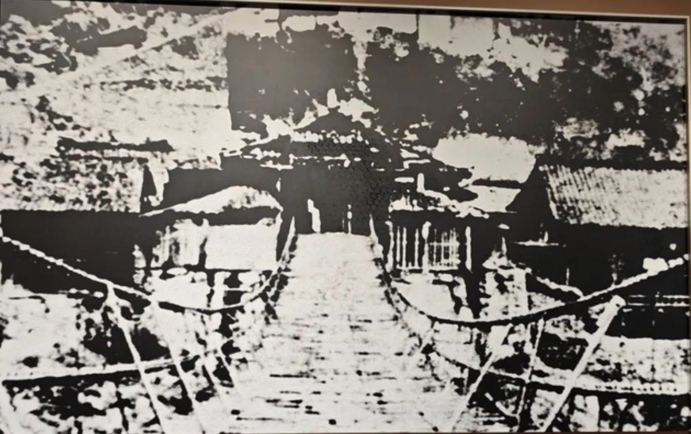
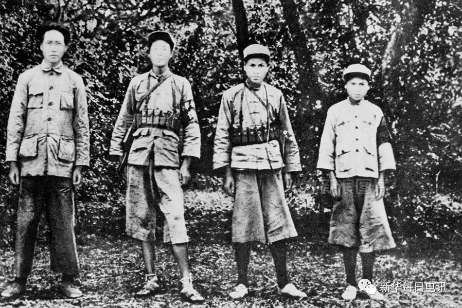
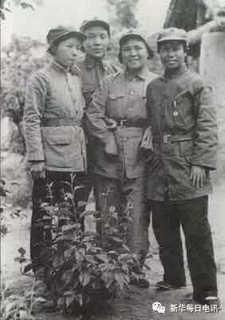
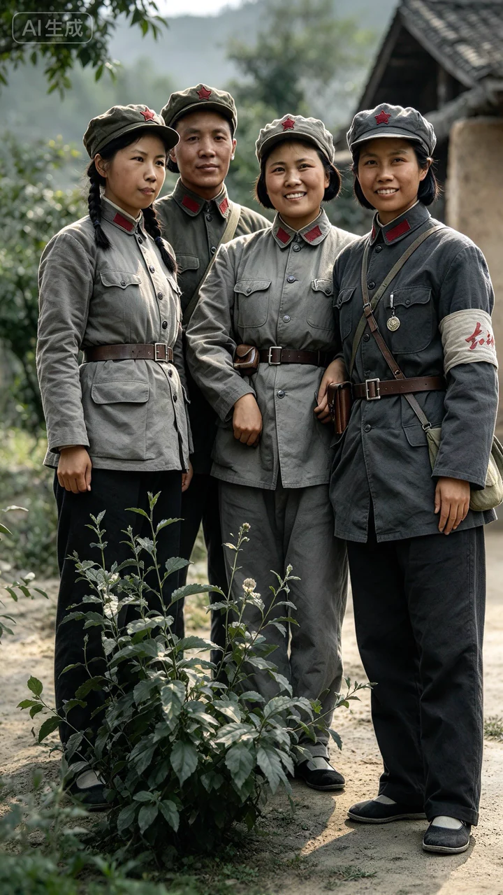
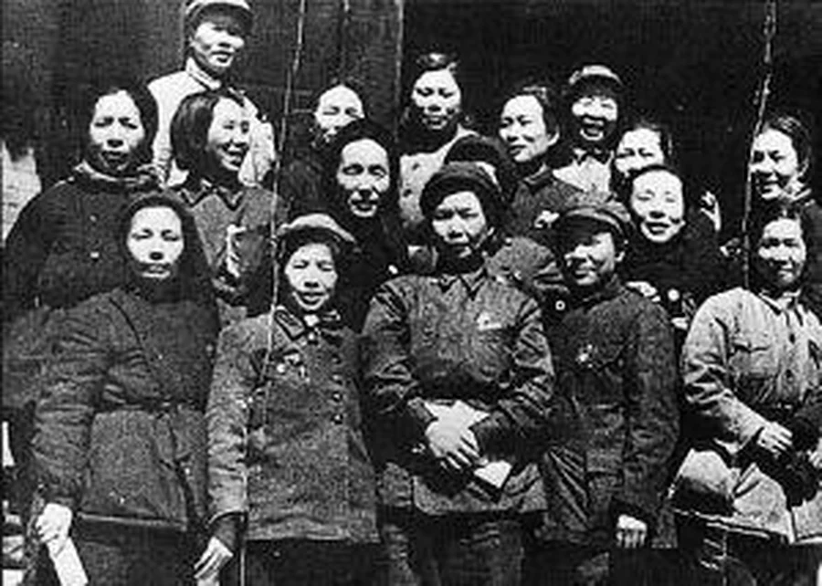
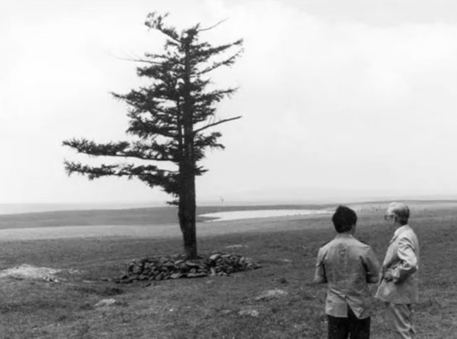

历史现场 · 1934
节点 01 / 03
第五次反“围剿”失利
1933 年下半年起，中央苏区在第五次反“围剿”中陷入被动。根据地空间不断被压缩，红军面临必须突围的严峻局面。
战略转移不是主动选择的一次远行，而是在生存危机中寻找新的可能。
1934.10 — 1936.10
纪念红军长征胜利 90 周年
他们走过的不只是路，
是一个民族最难的拐点。
REVIEW THE LONG MARCH
从江西的渡口到陕北的窑洞，两年时间，一条红线穿过中国最深的山河。先不急着赶路，从一组年份开始，把这段历史重新展开。
长征，是中国共产党和中国工农红军在极端困难条件下完成的一次战略转移。它不是一条被预先画好的直线，而是在围追堵截、雪山草地与不断选择中，一步一步走出来的生路。
当我们回望这段历史，看到的不只是行军里程与战斗数字，也看到许多普通年轻人把个人的命运，放进了民族存亡的更大命题里。


THREE YEARS · 三个切面

01 / 031934 · 秋
第五次反“围剿”失利后，中央红军主力于 1934 年 10 月从中央苏区出发，开始战略转移。于都河畔，成为许多人记忆里的起点。
“出发时，没有人知道这条路会有多长。”

“
雪山、草地、饥饿与追兵，把“走完”本身变成一种意志。回望不是停在苦难里，而是看见苦难之后，队伍为什么仍然向前。
LIGHT THE EMBER · 点亮火种
历史已经远去，但精神仍有温度。点亮火炬，走向下一章。
WHY THEY SET OUT
把时间拨回 1933 年。一次失利、一次选择、一次告别，构成了远征的起点。点击左侧节点，翻开三段历史现场。
节点 01 / 03
1933 年下半年起，中央苏区在第五次反“围剿”中陷入被动。根据地空间不断被压缩，红军面临必须突围的严峻局面。
战略转移不是主动选择的一次远行，而是在生存危机中寻找新的可能。
从“为什么出发”，到“怎样走过来”。
THE LONG MARCH ATLAS
一条朱红行军线，穿过湘江、赤水、金沙江、雪山与草地。点击地图上的光点，或沿下方时间轴逐站前行。
中央红军主力 8.6 万余人从瑞金、于都集结渡河，战略转移开始。
夜色里，于都河上的浮桥连起队伍的去路。出发的人群中，有年轻战士，也有机关人员和随军家属。那一刻，没有人知道前方是两万五千里的山河。
“他们走过的不只是路，是一个民族最难的拐点。”

铁索不会因为恐惧而变宽。历史照片留下来的，是一条需要有人先走过去的桥。
THE ROAD LEAVES THE MAP
1936 年 10 月，红军三大主力胜利会师。长征在会宁与将台堡画上句号，但它关于理想、意志与人民的故事，才刚刚开始被后来的人接续。
PORTRAITS OF THE COLUMN
一支队伍由数字构成，也由一个个年轻的人构成。先看人数的变化，再看队伍里的少年、女性与无名者。
20.6 万余与 5.7 万余，不是同一时点上的简单相减。沿途补充兵员约 1.7 万至 2 万人，差异并不等于牺牲人数。但这支队伍承受的巨大代价，仍然藏在每一个缩减后的数字里。
AN UNKNOWN LIGHT
能留下照片和姓名的人是少数。更多的战士，只留下“红军”这个共同的名字。
FOUR COLUMNS · 四路红军

史料照片 · 课程作业内部展示档案 01 / 04
中央红军主力及中央、军委机关从于都河以北地区集结出发。湘江战役后减至 3 万余人，1935 年 10 月抵达陕北吴起镇时仅 7000 余人。
四支部队统计节点不同，不宜作同一时点的横向比较。THE YOUNGEST GENERATION
不足20岁战斗员平均年龄
至少40%14—18岁战士占比
不足25岁指挥员平均年龄

SHE WAS THERE TOO
女红军既包括战斗员，也包括干部、医护、宣传与后勤人员。她们的年龄、岗位与经历各不相同，却用各自的方式走完了同一条路。
HER LONG MARCH
从雪山、担架与歌声出发，走近六位女红军。彩色画面为 AI 情景再现，历史照片与情景画面在版式中明确区分。

AI 情景再现 · 非历史现场
在枪火、病痛、饥饿与风雪之间，她们从未只做旁观者。
“就像在野外散步一样。” —— 康克清回忆长征
作为直属队指导员，她随红军三大主力行动，三次翻越雪山，走完整整两年的长征。别人眼中的极限，被她轻声说成“散步”。
康克清出生于江西省万安县罗塘湾的一个贫苦渔家。队伍翻雪山时，她不是被照顾的对象，而是直属队指导员。她随红军三大主力行动，走完长征全过程，三次翻越雪山，历时整整两年，比红一方面军其他女红军多走了一年。后来她回忆长征，却说“就像在野外散步一样”。一句轻描淡写，背后是整整两年的枪林弹雨与雪山草地。
NAMES · AND THE UNNAMED

THE SPIRIT CONTINUES
当视线从地图上抬起来，会发现新的“雪山草地”换了模样：荒原、病毒、技术难关，也可能是我们每个人想放弃的那一刻。
1962 年，369 名年轻人上坝，平均年龄不到 24 岁。三代人用 60 多年，把 1 棵树变成 115 万亩人工林。

“一日三餐有味无味无所谓，爬冰卧雪冷乎冻乎不在乎。”—— 第一代务林人地窨子门上的对联
不是枪林弹雨，而是在信息不完整、风险不确定的时候，仍然选择向前。点击姓名，听他们当时的那句话。
“肯定存在人传人。”
84 岁的钟南山在高铁餐车角落闭眼休息。几天后，他在镜头前说出“人传人”三个字。一个人面对巨大不确定性时，把真话说出来，本身就是重量。
塞罕坝人的长征，是把荒原变成林海；抗疫逆行者的长征，是从病毒手里抢回生命。
A LEGACY IN MOTION
几代人赓续长征精神，铸就美好明天。观看影像，完成一次属于今天的接力。
1936 年 10 月，红军三大主力胜利会师，标志着长征胜利结束。
影像会结束，脚下的路还在继续。
YOUR LONG MARCH
你的长征，也许没有名字。它可能是把一件难而正确的事，多做一天；也可能是在想放弃的时刻，再往前走一步。
从历史走来，向未来走去。
MAKE YOUR PLEDGE
学生
在我的长征里，把每一次认真坚持，变成走向未来的一小步。
CHOOSE ONE WORD
把一件难而正确的事，多做一天。
每一代人
有每一代人的长征路。
回望，是为了更好地出发。